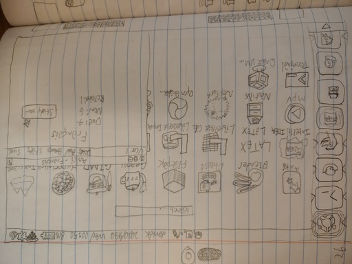
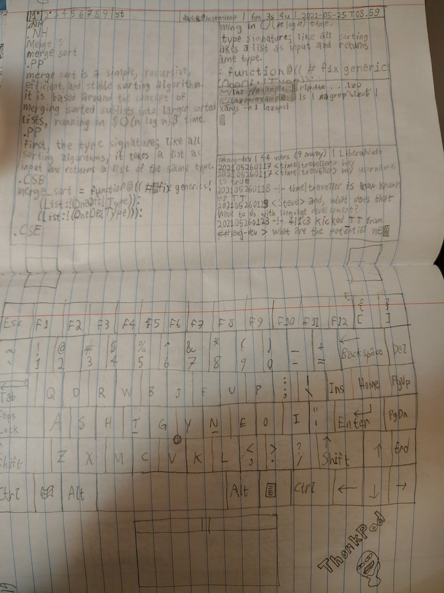

From 2019 thru 2021, as a teenager, I wrote in a notebook. Much of the content was technical. I titled it "Chaotic Ideas".
As we can expect from the title and context, much of it was rubbish, or meaningless out of context. Some of it, less so, and I present that here in order of where it was written in the book.
I tried to draw a bunch of software logos. They may have been done from memory, or with reference to the original, but limited by my poor drawing skills in those days.

Top-to-bottom, left-to-right: Arch Linux, Manjaro, Ubuntu, BusyBox (?), dwm (suckless), Zig, Lua; Tux (Linux), Artix Linux, Debian, Gentoo Linux, GNU, st (suckless), sxiv (suckless-adjacent), NixOS (?); Alpine Linux, Red Hat, dwm (suckless), sxiv (restyled), unrecognisable, Guix (?), Vim; Replit (pre-2022), Eudora email client (?), Gentoo Linux (again), Tux (again), Geany, Windows; VLC, Python, Rust (2x), Replit (again, fragment), Windows (again); GIMP (?), Blender, Firefox (2x), VirtualBox (pre-2024), Ubuntu (again), Discord (2x).
perhaps [strcmp timing vulnerabilities] could be mitigated while having fast code by starting byte-by-byte comparisons at a RANDOMLY SELECTED point in the string
This wouldn't work so well in normal C, because to pick a valid starting point, you'd need to know the length of the string.
But it seems effective if you know the lengths of the strings in advance (no separate call to strlen).
Mouse/trackball alternative that wraps around middle finger, and uses pointing for cursor movement, and other fingers to press buttons/wheel on sides

"Pointing for cursor movement" is the hard part. What do we do for that? Coloured marker and a webcam? Light sensor in the screen? Highly clever accelerometers?
What if we embedded a clock (or other trivial appliance) in an extension cord? What if the "cord" was really short and rigid?


On 2020-09-30, I estimated what my Linux laptop configuration might look like. This was probably before I had tried Linux in VMs, let alone on bare hardware.
Apps depicted in the grid, top-to-bottom, left-to-right (✓ = actually used now, ✗ = abandoned in practice): Anki (✓), Blender (✓), GNOME Cheese (✗), Flatpak (✗), Geany (✗, Neovim instead), GIMP (✗, ImageMagick/Flameshot), Hyperbolica (✗), Inkscape (✗); IntelliJ IDEA (✗), LaTeX (✗, command-line Typst), LibreOffice Calc (✗, Gnumeric), LibreOffice Impress (✗); mpv (✓), Nautilus (✗, fish), NetSurf (✗, Lynx), OBS Studio (✗, ffmpeg), OpenShot Video Editor (✗, ffmpeg); Terminal (✓, but foot, not GNOME), Oracle VirtualBox (✗).
numbers from pure associative arrays: 0 = {}, 1 = {{}:{}}, 2 = {0:1}, 3 = {1:0}, 4 = {1:0, 0:0}, 5 = {1:0, 0:1}, 0s10 = {1:1}, 0s11 = {1:1, 0:0}, 0s12 = {1:1, 0:1}, 0s13 = {0:2}
That is, we can make a total ordering on the set of recursively-constructed dictionaries, and from that a bijection to the natural numbers. This looks to be inspired by the von Neumann representation of ordinals. The 0sN notation indicates seximal, with which I was quite enamoured at the time, by analogy to 0xN for hexadecimal.
group an image into the largest possible contiguous regions of acceptably similar colour, then quantise the image by replacing each group of pixels with copies of a single representative colour
This feels reminiscent of the techniques in vkcz's quadtree_img.
From what I skimmed of the source code, I didn't recognise this particular method.
algorithmically quantify the difference between pairs of images, using this information to dynamically set the framerate of a video so as to make the image-difference between adjacent frames below a threshold
I think this means we'd need a way to interpolate finer-grained frames.
A prime number multiplied by an odd number will never be between two adjacent twin primes (except in trivial cases like 3)
There's much mathematically-immature folly to laugh at here. But, for a real proof:
I don't know how to prove it from here. But the conjecture still holds well beyond what past-me would've checked.
echo '...' | python -c 'list(print((int(n) + 1) // 2) for n in input().split(", "))' | factor
fn rsh(x: u8) -> u8 {
let mut r = 0;
let mut t = 1;
let mut n = 2;
while n != 0 {
if x & n != 0 {
r |= t;
}
t = n;
n = n.wrapping_add(n);
}
r
}
That's a one-bit right-shift in Rust without using the native instruction. Yliluoma 2014 has the same idea, in a more comprehensive list.

The above was crudely drawn by hand in the notebook. I replicated it today with Python:
import math
from matplotlib import pyplot as plt
rad: int = 5
fig, ax = plt.subplots()
fig.tight_layout()
fig.set_size_inches(4.0, 4.0)
ax.set_axis_off()
ax.axis((-rad, rad, -rad, rad))
for layer in range(rad):
ax.add_patch(plt.Circle((0, 0), layer + 1, fill=False))
steps: int = 4 * (2 * layer + 1)
for step in range(steps):
angle: float = math.tau * step / steps
ax.plot(
(layer * math.cos(angle), (layer + 1) * math.cos(angle)),
(layer * math.sin(angle), (layer + 1) * math.sin(angle)),
color="black",
)
fig.savefig("arcgrid.svg")
It might not look like it, but according to my calculations, each arc-section has the same area.
const MAX_DENOM: i32 = 100;
const TARGET: f64 = std::f64::consts::PI;
fn main() {
let mut cur = 1.0;
for denom in 0..MAX_DENOM {
let p = (denom as f64 * TARGET).round()
/ (denom as f64);
if (p - TARGET).abs() <
(cur - TARGET).abs() {
println!("{}/{} ({})",
(denom as f64 * TARGET).round(),
denom,
p);
cur = p;
}
}
}
That Rust code works verbatim to find rational approximations to an irrational number. It would be more efficient to descend the Farey sequence.
TRUST - Time-Revoked Update Sequence Transmission (2021-05-29)
- three types of participants: writers, servers, and readers
- writers compose and send updates
- each writer has a digital signature keypair
- updates are of the form SIG DTS LDN GDN CHN MSG
- SIG is the writer's digital signature for the rest of the update
- DTS is a timestamp to indicate when the update was originally created
- LDN and GDN are used by readers for verification, as described later (they are time quantities)
- CHN is a "channel" identifier, as described later
- MSG is arbitrary data; it is the content of the update
- writers must, after publishing an update to some channel, publish another updated to the same channel between DTS + LDN and DTS + GDN
- servers listen for and store updates published from authors [writers?]
- servers may also receive updates from other servers; this decentralisation is the main point of the protocol
- readers request updates for a given channel and public key (writer) from a server
- readers verify signatures on updates to protect against "forgery"
- readers check if the server's data is up-to-date by comparing the current time (DTC) with the times specified in the most recent update on the channel:
- DTC < DTS: writer violated protocol [claimed to time-travel]
- DTS < DTC < DTS + LDN: up-to-date
- DTS + LDN < DTC < DTS + GDN: may or may not be up-to-date
- DTS + GDN < DTC: definitely out-of-date
Unlike simpler and more common protocols, servers can't lie about when a writer posts updates.

Still about a year before I fully used Linux, I had anticipated my eventual Alpine Linux setup quite accurately:
The keyboard is shown in the Workman layout, which I used for a year or two before I settled on Dvorak. What could "lazop" possibly refer to, you ask?
2021-05-22: Design principles of the previously-introduced [but on a later page] operator-oriented programming language ...Various design notes:
- syntactic uniformity through focus on operators/operations
- powerful type system
- self-consistent omnipresent object system [an unconventional jumble of buzzwords whose meaning is now lost on me]
- partially lazy evaluation
- code can be data
- everything is an expression
... Whilst syntactic regularity is cool, when taken to the extreme (as in LisP), it can be horrendously detrimental to usability. As such, I'm starting to design an ultra-high-level operator-oriented programming language. Speculative sample below:
- temporary name of language: "lazop" [lazy operators]
- all expressions (the whole program is one) are one of:
- simple literal
- parenthesised subexpr.
- curly-bracket-enclosed code block
- square-bracket-enclosed, comma-separated list constructor
- subexpr-operator-subexpr
- each expression is evaluated with a target return type; if the expression cannot be evaluated in a way that would return that type, there is an error
- available operators (non-exhaustive):
! $ % & * + - . / : ; < = > ? @ ^ | ~ << >> && || == >= <= != ** +- */ += -= /= &= |= <<= >>=- primitive types (nonexhaustive):
UInt8 Int32 Float64 Ident String CodeBlock Null Bool Reader Writer BigInt- generic/compound types (non-exhaustive):
LValue(T) Object(T) Pair(T, U) List(T) Function(P, R) HashMap(K, V)factorial = function@((n:Int32):Int32:{ (n<=1)?({1}:{(factorial@(n-1))*n}) }); stdout@"What ... is your name?"; name:String = stdin@_; (name == "Steve")?{ factorial@10 # Steve gets to know 10! }:{ stdout@"Begone!" }
I never implemented Lazop as described. The train of thought did inspire the very real, twice-implemented Skim language. I remain tempted to implement more operator-oriented language(s), tho my more recent designs are less recklessly ambitious.
2021-05-20: a social media/user-generated-content platform which improves upon the user-upvote system by automatically assigning users together (invisibly) as "friends" based on voting similarity and showing post scores to users adjustedly [sic] based on the "friendships" between the voters and the viewers
That is, the platform would cluster users by their observed taste in posts, and rank posts for each user in a way calibrated to their taste. I suspect contemporary "algorithmic" social media achieves similar effects, but I would've intended an approach more transparently formulaic:
[users A, B, C, D raw votes on posts a, b, c, d, e, f][users' friendship coefficients to each other user]
a b c d e f A + + 0 - + 0 B 0 + 0 0 + + C - 0 - + + 0 D + + + + + + [users' perceived ratings: dot products of raw votes and friendships]
A B C D A x +2 -1 +2 B +2 x +1 +3 C -1 +1 x 0 D +2 +3 0 X
A B C D a +3 +4 -1 +2 b +4 +5 0 +5 c +3 +2 0 0 d +1 +2 +1 -2 e +3 +6 0 +5 f +4 +3 +1 +3
browser extension or similar to find all username-like items on the page, so as to insert arbitrary-but-consistent autogenerated "profile pictures" to go with each user, for recognition of users beyond names
The standard term is "identicon", and there are programs like this, but not for usernames-in-general as I propose, as far as I know.
Around this point, several pages are filled to calculate square roots by hand to four decimal places. One must imagine the hapless fool unaware of the 21st century's ubiquitous calculators.
Chaotic Ideas is long and confusing to read. I will return to add more excerpts from the remaining 80 pages.